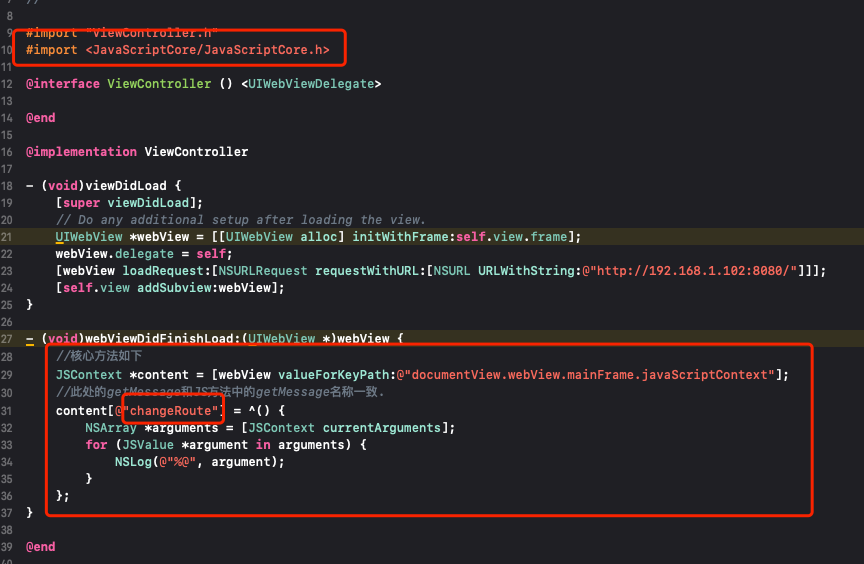
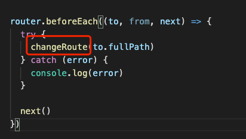

- 在wkWebView的懒加载中，增加进度监听
1
2
| //进度监听
[_wkWebView addObserver:self forKeyPath:@"estimatedProgress" options:NSKeyValueObservingOptionNew context:NULL];
|
增加监听方法
1
2
3
4
5
6
7
8
9
10
11
| // 监听加载
- (void)observeValueForKeyPath:(NSString *)keyPath ofObject:(id)object change:(NSDictionary<NSKeyValueChangeKey,id> *)change context:(void *)context {
if ([keyPath isEqualToString:@"estimatedProgress"]) {
_loadingProgressView.progress = [change[@"new"] floatValue];
if (_loadingProgressView.progress == 1.0) {
dispatch_after(dispatch_time(DISPATCH_TIME_NOW, (int64_t)(.4 * NSEC_PER_SEC)), dispatch_get_main_queue(), ^{
_loadingProgressView.hidden = YES;
});
}
}
}
|
- 在加载vue的hash模式提供的网页，webview的代理方法不能监听到点击事件，所以还是要通过kvo监听网页的点击事件
同样在在wkWebView的懒加载中，增加webview加载URL的变化的监听
1
2
| // 加载链接监听
[_wkWebView addObserver:self forKeyPath:@"URL" options:NSKeyValueObservingOptionNew context:nil];
|
在监听方法 - (void)observeValueForKeyPath:(NSString *)keyPath ofObject:(id)object change:(NSDictionary<NSKeyValueChangeKey,id> *)change context:(void *)context中添加
1
2
3
4
5
6
7
8
| if ([keyPath isEqualToString:@"URL"]) {
// 可以在这里进行拦截并做相应的处理
NSLog(@"URL------%@",_wkWebView.URL.absoluteString);
if ([self.delegate respondsToSelector:@selector(policyNewsWebViewCanGoBack:)]) {
BOOL hiddenBack = [_wkWebView.URL.absoluteString containsString:@"EpidemicConsultation"];
[self.delegate policyNewsWebViewCanGoBack:hiddenBack];
}
}
|
方式二： 使用JS方法调用
webView的懒加载中，增加
1
2
3
4
5
| WKWebViewConfiguration *config = [[WKWebViewConfiguration alloc]init];
config.preferences = [[WKPreferences alloc] init];
config.userContentController = [[WKUserContentController alloc]init];
// 调用JS方法
[config.userContentController addScriptMessageHandler:self name:@"changeRoute"];
|
在增加的WKScriptMessageHandler方法中调用
1
2
3
4
5
| - (void)userContentController:(WKUserContentController *)userContentController didReceiveScriptMessage:(WKScriptMessage *)message {
if ([message.name isEqualToString:@"changeRoute"]) {
NSLog(@"%@",message.body);
}
}
|
相应的H5端需要增加相应的方法:
1
| window.webkit.messageHandlers.changeRoute.postMessage('参数')
|
方式三
使用JavaScriptCore：

在vue的项目中增加：
